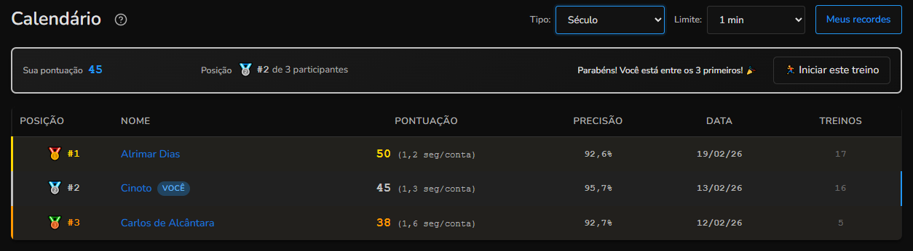
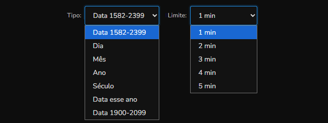

Há um tutorial abaixo explicando como calcular o dia da semana de uma data.
Na página de calendário você tem os rankings do Numix para cada tipo de treino. Os treinos são iniciados na mesma página: escolha o tipo e o limite nos filtros e clique no botão "Iniciar este treino". Existem até 7 tipos de treino de calendário (Data 1582-2399, Dia, Mês, Ano, Século, Data esse ano e Data 1900-2099) dependendo do seu nível.

No topo da página há um quadro mostrando sua posição atual no ranking filtrado, junto com o total de participantes.
Você pode treinar calcular o dia da semana de uma data ou treinar cada parte da data separadamente.
Quais tipos de treino e limites aparecem para você depende do seu nível. Conforme você avança, desbloqueia outros tipos e outros limites de tempo até 5 minutos.

No alto da página você filtra qual ranking quer ver: Tipo (Data 1582-2399, Dia, Mês, etc.) e Limite (até 5 minutos).
O botão "Meus recordes" leva você à sua página de recordes de calendário.
Quando dois usuários possuem a mesma pontuação, o desempate é feito usando os seguintes critérios, nesta ordem:
O usuário com menos erros realizados fica em posição melhor.
O usuário com menos treinos realizados fica em posição melhor.
Se ainda houver empate, o recorde mais antigo é recompensado por ter alcançado a pontuação primeiro.
Ao clicar no nome de um usuário no ranking, você será redirecionado para a página de recordes de calendário dele. Isso permite:
Você pode configurar seu perfil para não mostrar seus recordes no ranking global. Quando essa opção está ativada:
Para ativar essa opção, acesse seu perfil e configure a preferência de privacidade.
Se você ainda não sabe calcular mentalmente o dia da semana de uma data, use o método abaixo. A ideia é obter quatro números (dia, mês, ano e século), somá-los e calcular o resto da divisão dessa soma por 7. Esse resto corresponde ao dia da semana (1 = domingo, 2 = segunda, … 0 = sábado).
É o mais fácil: use o próprio dia do mês (1 a 31), sem mudar nada.
Cada mês tem um valor fixo que você precisa decorar. Uma forma de lembrar é criar associações. Abaixo estão as associações que eu uso como exemplo:
Use apenas os últimos dois dígitos do ano (por exemplo, 85 para 1985). A conta é: some esse número com o quociente da divisão dele por 4 (ignorando decimais) e calcule o resto da divisão desse resultado por 7. Dá para fazer de cabeça, mas fica mais rápido se você decorar o resultado para cada ano. Abaixo, três exemplos:
Tabela com o valor do ano para todos os anos de 0 a 99 (últimos dois dígitos):
| Ano | 0 | 1 | 2 | 3 | 4 | 5 | 6 | 7 | 8 | 9 |
|---|---|---|---|---|---|---|---|---|---|---|
| 0–9 | 0 | 1 | 2 | 3 | 5 | 6 | 0 | 1 | 2 | 3 |
| 10–19 | 4 | 5 | 6 | 0 | 1 | 2 | 3 | 4 | 5 | 6 |
| 20–29 | 2 | 3 | 4 | 5 | 6 | 0 | 1 | 2 | 3 | 4 |
| 30–39 | 5 | 6 | 0 | 1 | 2 | 3 | 4 | 5 | 6 | 0 |
| 40–49 | 1 | 2 | 3 | 4 | 5 | 6 | 0 | 1 | 2 | 3 |
| 50–59 | 4 | 5 | 6 | 0 | 1 | 2 | 3 | 4 | 5 | 6 |
| 60–69 | 2 | 3 | 4 | 5 | 6 | 0 | 1 | 2 | 3 | 4 |
| 70–79 | 5 | 6 | 0 | 1 | 2 | 3 | 4 | 5 | 6 | 0 |
| 80–89 | 1 | 2 | 3 | 4 | 5 | 6 | 0 | 1 | 2 | 3 |
| 90–99 | 4 | 5 | 6 | 0 | 1 | 2 | 3 | 4 | 5 | 6 |
Para decorar o valor de cada ano, pode fazer associações com o ano e o valor. Por exemplo, 23 é o número do Michael Jordan, que não errava nada, seu valor é 0. Do 52 ao 55, todos os anos têm o valor igual ao final do ano: 52 é 2, 53 é 3, 54 é 4 e 55 é 5. São muitos anos, mas devagar pode conseguir decorar todos.
Cada período de 100 anos (século) tem um valor fixo. O padrão se repete a cada 400 anos, então você pode usar a tabela abaixo e estender para outros séculos no futuro:
| Século (anos) | Valor |
|---|---|
| XVI (1582–1599) | 0 |
| XVII (1600–1699) | -1 |
| XVIII (1700–1799) | -3 |
| XIX (1800–1899) | 2 |
| XX (1900–1999) | 0 |
| XXI (2000–2099) | -1 |
| XXII (2100–2199) | -3 |
| XXIII (2200–2299) | 2 |
| XXIV (2300–2399) | 0 |
Some o número do dia + número do mês + número do ano + número do século. Calcule o resto da divisão desse total por 7. O resultado é o dia da semana: 1 = domingo, 2 = segunda, 3 = terça, 4 = quarta, 5 = quinta, 6 = sexta, 0 = sábado.
São bissextos os anos divisíveis por 4, exceto os anos que terminam em 00 (como 1900, 2100): esses só são bissextos se forem divisíveis por 400. Assim, 2000 foi bissexto, mas 1900 não foi e 2100 não será.
Abaixo, três exemplos de contas completas:
12 de abril de 1976 — Dia: 12. Abril: 0. Ano 76: (76 + 19) mod 7 = 4. Século XX: 0. 1976 é bissexto, mas abril não é janeiro nem fevereiro, sem ajuste. Total: 12 + 0 + 4 + 0 = 16. 16 mod 7 = 2 → segunda-feira.
21 de fevereiro de 2026 — Dia: 21. Fevereiro: 4. Ano 26: (26 + 6) mod 7 = 4. Século XXI: -1. 2026 não é bissexto, sem ajuste. Total: 21 + 4 + 4 - 1 = 28. 28 mod 7 = 0 → sábado.
8 de janeiro de 1752 — Dia: 8. Janeiro: 1. Ano 52: (52 + 13) mod 7 = 2. Século XVIII: -3. 1752 é bissexto e a data é em janeiro: subtrair 1. Total: 8 + 1 + 2 - 3 = 8; 8 - 1 = 7. 7 mod 7 = 0 → sábado.